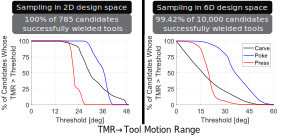

Story in This Paper
Wielding a tool is in general very different from grasping an object for pick-and-place.
In this work, we investigate how to design multi-finger robotic hands that can wield tools.
Source: dreamstime.com
We first scoped the problem to the application of clay sculpting. By observing human sculptors, we developed an intuition: the poses in which the human hand holds tools are important.
Source:
Based on this intuition, we formulated the concept of foundational pose, which we interpret as a snapshot that captures the underlying mechanism formed by the tool and the hand.
And one hand can form multiple mechanisms with the same tool.
Then, we made a hypothesis: if a tool and a hand can reach a foundational pose, then they can act as a corresponding tool-hand mechanism for the hand to wield the tool.
We tested this hypothesis in a hand design experiment, where we used foundational poses to sample and evaluate many hand designs.

The results show that above 99% of the 10,785 generated hand designs successfully wielded tools in simulation, supporting our hypothesis.
Meanwhile, our methods uncovered the richness of the hand design optimization problem that could be difficult to uncover otherwise, such as clustering and the Pareto front.

Lastly, we built a hardware prototype equipped with rigid endoskeleton, soft skins, and tendon-pulley transmissions.

With even a simple proportional-derivative controller and open-loop trajectories, the prototype managed to wield a tool to manipulate a piece of clay.